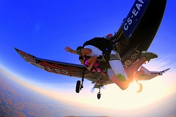

Skok w tandemie
Skok w tandemie - najprostsza droga do zrealizowania marzeń o lataniu!
Zapewne nie raz słyszałeś w piosenkach czy górnolotnych sentencjach jak to jest latać wolno jak ptak, wiatr we włosach itd...
Możesz być pewny, że wolno u nas nie będzie, a wiatru we włosach będzie dostatek.
No to zaczynamy!
1 krok
Przyjedź na lotnisko, gdzie poznasz swojego instruktora, który przeprowadzi szkolenie przed skokiem
2 krok
Gotowy do skoku wraz z instruktorem udasz się do samolotu by zająć miejsce przy oknie i rozkoszować się widokami w drodze na 4000m
3 krok
Instruktor już Cię przypiął do siebie, powoli zbliżacie się do drzwi, szeroki uśmiech, ruch w tył, do przodu i jesteście na zewnątrz! Prędkość lotu to ok. 200km/h, czas lotu bez spadochronu ok. 60sekund
4 krok
1500metrów nad ziemią, spadochron się otworzył, przyjemny wiaterek, piękne widoki i tak przez około 6min szybujesz do ziemii
5 krok
Lądowanie, grunt pod nogami, przeżycia i emocje często nie do opisania. W 99% przypadków chęć powrotu na górę.
6 krok
Zarezewuj skok bądź zakup voucher za pomocą formuarza kontaktowego by doświadczyć swobodnego lotu z 4000 metrów!
O nas
Tomasz Nohanowicz

Swój pierwszy skok wykonał w 2009 roku w Ostrowie Wielkopolskim w tandemie, po tym doświadczeniu wiedział, że skoki spadochronowe na stałe staną się jego pasją . W 2013 roku ukończył kurs na samodzielnego skoczka, a już rok pózniej wyjechał do Dubaju gdzie przez okres 2 lat oddał ponad 900 skoków, szkoląc się pod okiem najlepszych instruktorów i coachów na świecie. Od 2016 roku przebywa w Polsce, a jego domową strefą spadochronową jest Skydive.pl gdzie wykonuje skoki jako Tandem pilot oraz kamerzysta. skydive.pl .
Liczba skoków: 2000
Artur Karwowski

Instruktor z wieloletnim doświadczeniem. Swój pierwszy skok wykonał 23 sierpnia 1999 roku na Lotnisku Aeroklubu Szczecińskiego, jak to wyglądało możecie sobie obejrzeć TUTAJ. Współwłaściciel jednej z największych i najprężniej działających szkół spadochronowych w Polsce: SKYDIVE.PL
Liczba skoków: 6000
Kurs AFF
Szkolenie spadochronowe AFF ( Accelerated Freefall) - to nowoczesna, bezpieczna i bardzo efektywna metoda szkolenia spadochronowego, której celem jest przygotowanie Cię w teorii i w praktyce do samodzielnego skakania ze spadochronem.
Szkolenie AFF to kompleksowy kurs, na którym zapoznasz się z zasadami skoków spadochronowych oraz obowiązującymi procedurami podczas ich wykonywania.
W trakcie zajęć teoretycznych poznasz budowę spadochronu, dowiesz się wszystkiego na temat wyposażenia skoczka spadochronowego oraz działania systemów zabezpieczających i procedur awaryjnych.
Podczas skoków oddanych w trakcie szkolenia spadochronowego nauczymy Cię stabilnej sylwetki w powietrzu, poruszania się podczas swobodnego spadania, otwierania i pilotowania spadochronu oraz bezpiecznego lądowania.
Szkolenie praktyczne AFF - Część praktyczna szkolenia AFF rozpoczyna się w sobotę ok. 14.00 i trwa do zachodu słońca. W tym czasie każdy uczestnik wykonuje max. 2 skoki, obejmujące poziom 1 i 2. Kolejne skoki kontynuowane są w niedzielę od rana do zachodu słońca.
Pierwsze skoki student wykonuje w asyście 2 instruktorów, którzy podczas swobodnego spadania asekurują Was w powietrzu. Za pomocą systemu znaków porozumiewają się z Wami np.: otrzymujecie sygnał do skorygowania Waszej sylwetki. Po opanowaniu podstaw skaczecie z jednym instruktorem, aż do egzaminu będącego ukończeniem kursu spadochronowego AFF. Skoki z dwoma instruktorami to poziom 1 i poziom 2. Skoki z jednym instruktorem to poziomy od 3 do 7.
Każdy skok wykonujemy z 4000 metrów, co daje wam ok. 50 sekund swobodnego spadania i ok. 6 min. lotu spadochronem na otwartej czaszy.
Podczas kursu AFF wszystkie skoki są filmowane przez instruktorów, a następnie omawiane indywidualnie. Tylko taka metoda pozwala na efektywne uczenie się i możliwość doskonalenia umiejętności w każdym kolejnym skoku.
Kurs AFF kończy się egzaminem.
Po jego zaliczeniu skoki wykonuje się samodzielnie (instruktorzy prowadzą nadzór nad skoczkiem do 50 skoku). Skoki spadochronowe odbywają się na naszej strefie Fliteclub.pl
Po wykonaniu 50 skoków spadochronowych uczeń może ubiegać się o wydanie przez Urząd Lotnictwa Cywilnego - Świadectwa Kwalifikacji - dokumentu stwierdzającego całkowitą samodzielność skoczka spadochronowego.
przykładowy film z przebiegu takiego kursu możesz zobaczyć TUTAJ
Cennik
Tandem - opcje
|
cena |
opis |
| normal |
750zł |
Skok z instruktorem bez filmu wideo i zdjęć |
| SELFIE |
900zł |
Skok z filmem wideo kręconym z ręki instruktora |
| PRO |
1000zł |
Skok ze zdjęciami i wideo filmowaniem przez skoczka kamerzystę |
| EXCLUSIVE |
1100zł |
Zawiera opcję SELFIE I PRO |
Galeria zdjęć

